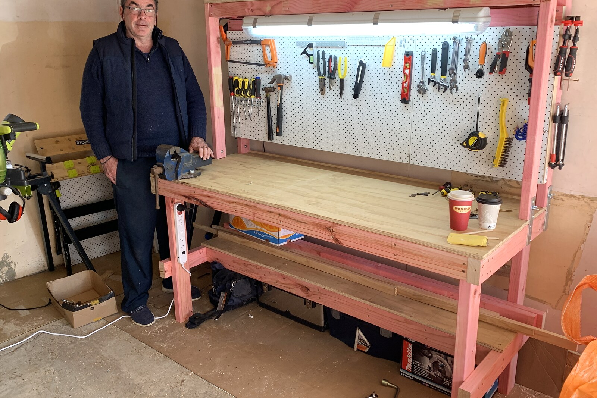
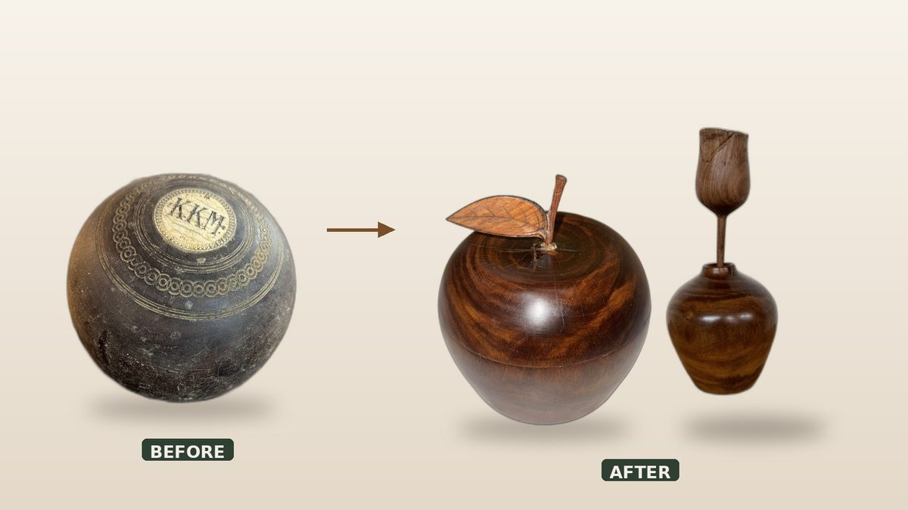
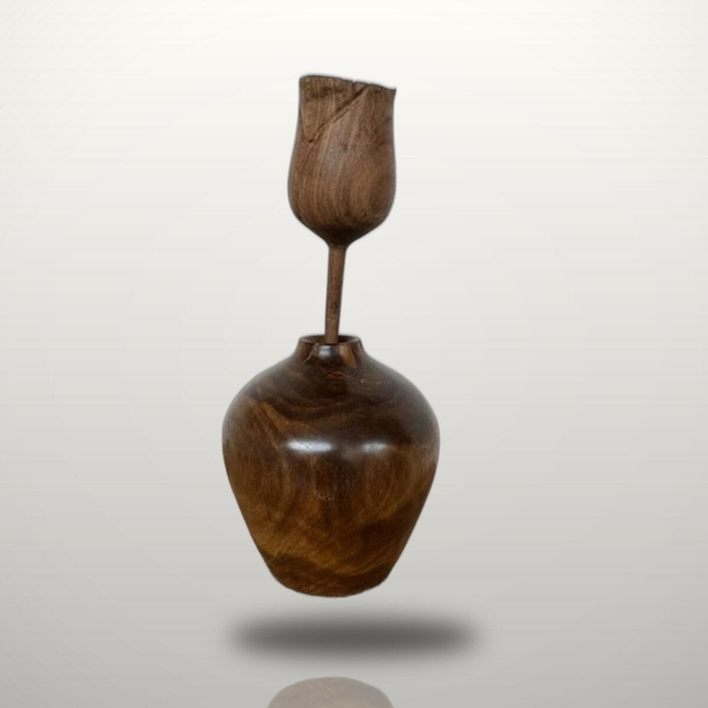

About
Hi, I'm Mark

I've been making things by hand since I was fifteen, when I started out in the silver trade, raising goblets, dishes and tankards from flat sheet metal. Life took me in other directions for a long stretch, but the pull to make never really left. During the Covid lockdowns I cleared out the garage, built myself a workbench, and started again, this time working in wood and light.
What's stayed with me the whole way is the quiet satisfaction of watching a base material become something someone values, as true of turning a bowl from native timber today as it was of raising a tankard at fifteen.
The part I love most is when the piece belongs to someone else's story. Give me the bare bones, an idea, or just a material that matters, and I'll tell your story through the work. It might be a slab of timber your grandad kept in the garage for years. That, to me, is what this is really about: connecting with someone, and transforming their story into something they can hold, a physical memory. Whether it's turned from native timber or laser-engraved, it's created with you, not just for you.
Whāia te iti kahurangi, ki te tuohu koe, me he maunga teitei
Pursue excellence; should you stumble, let it be to a lofty mountain.
A whakataukī I try to work by.



Let's start
Let's make yours
If you've got a piece in mind, or just the beginnings of one, I'd love to hear it.
Start a commission